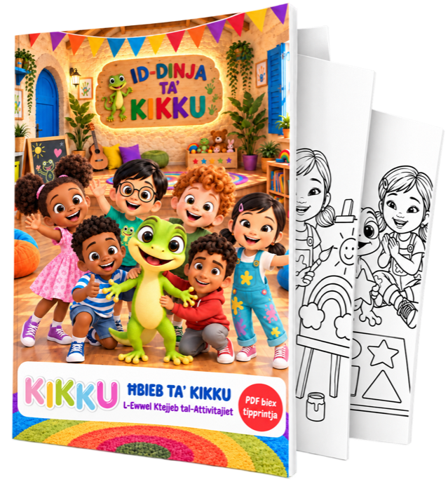

Everyday words
Family, feelings, food, animals, transport and more.
Fun Maltese songs, videos and activities that help children hear, repeat and enjoy using Maltese.
Every song explores a small theme through music, repetition and playful animation.
Family, feelings, food, animals, transport and more.
Simple words and phrases children can hear and repeat.
Catchy songs make new Maltese feel familiar and fun.
Made for little learners, families and educators who want to make Maltese part of everyday play and conversation. It is a friendly starting point for Maltese for children and for families discovering Maltese as a foreign language.

Download our free printable activity booklet for little ones.